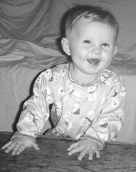

Identifying Infant Constipation ...and Gaining Peace of Mind
It's been a few days of unusually easy diaper changes, and you're left wondering...Is this infant constipation? Or am I just lucky?
By far, most of the questions I get asked from moms on this site have to do with their baby's bowel movements. As moms, we are acutely aware
that what goes in must, at some point, come out. So when we see day after day of empty diapers, we start to worry.
Is my baby eating enough? Is this why she seems so fussy?
And as the days pile on, our minds start wondering into the realms of
panic.
What if something goes badly wrong inside? How will I know if she needs to see a doctor? What about Cousin Amy's baby who required
hospitalization?
Whoa, partner! It's time to reign in the horses of circumspect and start dealing with facts. There are actually ways to answer these questions.
You can, in most cases, figure out on your own if infant constipation is the culprit, and if it is, you can usually treat it at home.
The First Clue in the Infant Constipation Mystery...
Infant constipation is described as "the consequence of hard and infrequently passed bowel movements." However, there's a problem with that
definition. It's rather unhelpful.
What-in-the-heck is "infrequently passed" supposed to mean? 6 hours? A day? A week?
In reality, the term "infrequently passed" is entirely relative. It completely depends on YOUR baby to determine what it means.
Angelic Andy
Let me introduce you to "Angelic Andy". Angelic Andy poops soft stools like warm chocolate ice cream
every afternoon. (He also never has poop leak past the leg barrier and has rash-resistant skin.)
Then one day, he suddently stops. 3 days go by, and nothing. "Angelic Andy" is now qualified as having "infrequently passed stools".
Free-Spirit Freida
On the other hand, you have "Free-Spirit Freida" who perfers to have a less structured approach to bowel-moving. Why be predictable?
She prefers to wait 2 days, then go. Then wait 3 days, then go...
In her case, it may take 7 days without a movement for her to qualifiy as having "infrequently passed" poops.
Know Thy Infant
I recently had to take my newborn (Bella) to see a pediatric gastrointolgist at the Children's Memorial Hospital in Milwaukee.
While at the hospital, the nurse practioner shared a
story about a 3-month-old who would go 13 days without a bowel movement. Then, on the 14th day, she would fill three diapers.

Elena's happy face is a good indicator things are functioning properly.
Marge (the NP) shared that the baby was not considered constipated. She was happy, her belly was nice and soft (not hard and compact), she wasn't
vomiting, she had no fever...and the bowels (when they moved) were soft. This was just the schedule her body had decided to adopt.
Learning your baby's bowel habits is the best way to determine the "infrequently passed" factor. You can write it out on a chart, or simply make an astrisk on
the calendar.
Develop some way of tracking, so you don't get caught panicked on day 3. It may be possible that 4 days without a bowel
movements is normal for your baby.
Also, keep in mind that between a baby's third and fourth month, there is generally a shift in bowel movements. It's not uncommon for babies who
were regularly going every day or so, to abruptly stop. There is also usually a major digestive change at the 6 month mark, around when you begin introducing him to solid foods.
Sit tight and watch your baby for signs of uncomfortability. It could take up to a week for him to get back on track. In the meantime, try some
home-made cures to keep things nice and soft.
When he does eventually have a poop, use this checklist to determine whether or not infant constipation really is an issue, or if he's just
adjusting to a new bowel schedule.
So What Causes the "Infrequently Passed"
Part of Infant Constipation, Anyway?
Yes, yes, I hear you. Inquiring minds want to know...what happened to make the clockwork suddenly break down into more of a sundial?
If we lived in a world of perfect colons, our bowels would keep the perfect balance of non-absorbale waste and water, excreteing regularly and
without issue and maintaining a healthy digestive system (which is essential for overall wellbeing).
However, occasionally our bowels don't get the recipe for health just right. We overdo the "waste" and misplace the "water", producing the
wonderful rock patties that make diaper changes so easy.
(Okay, I'll lay off the ba-nasty food references...)
Or it may not be a balance issue. Infant constipation can also be caused when the urge to relieve the bowel is ignored.
The retained stool can dry out, become hard, and be difficult to pass.
In some cases, newborns will be born without the required nerves in their rectum to defectate. Without these nerves, the muscles around the rectum
(spincters) do not know to contract and push out the waste. A biopsy would need to be performed (painless, but uncomfortable) to determine whether
these nerves are present. If not, surgery will have to be performed.
A Dangerous Intussusception
In rare cases, the intestine will slide in on itself (like a telescope) and create a blockage.
It's most common in boy babies between the ages of 5 and 10 months old.
He will suddenly have intense abdominal pain, causing him to draw his knees up to his chest. This will happen on and off for a while. He may
pass bloody stool and mucus, he could also vomit, have a distended tummy or seem excessively drowsy.
This is a very serious condition. Contact your doctor immediately if you feel your baby has an intussusception.
An Infant Constipation Checklist:
Elementary, My Dear Watson...
"Hello, mother. I come bearing a gift.
I'll give you a hint.
It's in my diaper and it's not a toaster."
~ Stewie, The Family Guy
Since we've successfully dealt with the "infrequently passed" portion of our definition of infant constipation, it's time to bring out the
checklist. (I'm a big fan of checklists. "Check" out my checklist for infant ear infections here.)
Consider these questions. If you answer "yes" to these questions, your baby is officiality constipated. It's time for treatment.
Is he leaving hard, dry pellets in his diaper?
Does the bowel movement seem thicker than peanut butter?
Has her bowel movement schedule suddenly shifted? Have poopy diapers abruptly stopped for no reason? (See the "first clue" mentioned
above.)
Is she abnormally fussy? Does that fussiness seem to stop after a large poop?
The Little Trickster
Don't be fooled. Your baby may strain, grunt, and turn red-faced when having normal bowel movements. This is not necessarily
a sign of infant constipation.
{Photo by Avi Reem}
It's a sign that he is learning how his body functions. Once that becomes
routine, his vocalizations will cease. If it still bothers you, sit him some warm water or hold him in the squat position (with his legs
bunched up on your forearm) to help him poop.
For newborns 0-6 months old, it's possible she's suffering from Dyschezia (dye-cheese-e-a).
The difference being, that she's straining hard to produce soft poop. It appears to be an oxymoron to work so hard to produce something
so soft.
Fortunately, Dyschezia is not serious. Your newborn is just having trouble figuring out how to coordinate her bowels. It will resolve itself eventually
(and in the meantime, might I suggest some ear plugs?)
Infant Constipation and Breastfeeding
If you are breastfeeding a newborn (younger than 6 to 8 weeks), dirty diapers are one of your only indicator that your baby is getting
enough to eat (weight gain being the other). And, of course, babies that aren't getting enough to eat don't develop at healthy rates.
There are two kinds of breastmilk: foremilk (the "first" milk) and hindmilk (at the "hind" end). The
foremilk comes right away, is more plentiful, but has less fats and calories than the hindmilk.
Getting hindmilk (not just foremilk) is the key to a healthy breastfed baby.
Doing wet diaper checks helps to monitor wether your baby is being properly hydrated. However, those wet diaper
checks only show he is getting foremilk. It doesn't show if he is getting the nutritious
hindmilk he needs to thrive. Breastfed babies (before solids) should have daily, or at most
every-other-day bowel movements.
If you're breastfeeding, the lack of poopy diapers is most likely not a sign of infant constipation. Breast milk
contains a natural laxative that makes it rare that a breast-fed baby is constipated.
Instead, there are two possibilities here.
First, she just may not be an every-day poop kind of gal. It may be more normal for her to be an every 1-2 day kind of girl (or more -
stool texture is the key here.)
Or second, it may be possible that he is not getting enough hindmilk (good nutrition) in your breastmilk.
If the problem is the second, don't get depressed. It doesn't mean
that your milk is inferior. It means your breastfeeding technique and position may need to be improved.
If your baby's stools are consistently green, watery and foamy, it may also be a sign of "oversupply
syndrome", a foremilk-hindmilk imbalance. In this situation, your baby may act colicky, gain weight slowly and have forceful,
explosive bowel movements. Adjusting your breastfeeding technique can help.
(Too see the "danger colors" on the spectrum of poo, see this article.)
Use consistent weight gain,
appetite and the firmness of the bowel movements to help you gauge digestive health. Anything firmer
than peanut butter should be treated.
This research was obtained from The Importance of Newborn Stool Counts an article by Denise Bastien for the La Leche League, the nation's largest breastfeeding organization.
Infant constipation ranks high on the list of a mother's worries. It truly is mind-blowing how much time
and energy we spend on making sure our babies are eating and eliminating on a regular basis.
Knowing how
to diagnose baby constipation in a short amount of time can quickly ease those worries.
I just subscribed to the site, and I'm very happy I did. I have worked in the medical field for several years and love to have good resources for when things come up... ~ Crystal S.
What a great site and thanks for having it available! ~ Bernadette W.
I'm very excited to start receiving the newsletter. I've checked out your site a couple times and I loooovve how it's arranged, your language, and tips - it's great! ~ Emily N.
Heather, I can't express how happy I am I discovered your site! ~ Liza T.
Thank you Heather, for your wonderful newsletter. There is always something new! ~ Desiree T.
I'm a 1st time young mom, 23 and single, so I have found very very helpful...I can't seem to stop myself telling everyone I know about you, some thought you were my mom! ~ Vuyiswa N.
Your website is very helpful and I discovered a couple of great online stores. 'Cause I'm not a big reader, it is very nice that I can find the most important information through your
website. ~ Tonya G.
Thanks Heather! Your Milestone eBook is SO detailed and so correct. My son is doing all or most of the things and many are not mentioned in the usual books/sites. Great job and keep it up! ~ Anwesha C.
Thanks so much for creating such an AWESOME website. I really appreciate your sense of humor and real writing style. ~ Andrea Z.
My baby refused all bottles until you showed me the MAM bottle. Thank you so much for the recommendation. I wouldn't have known about them if not for your website. ~ Jennifer at Sweet Lilly ConfectionsThank you ladies! Talk about great motivation to keep writing...


 I just subscribed to the site, and I'm very happy I did. I have worked in the medical field for several years and love to have good resources for when things come up...
I just subscribed to the site, and I'm very happy I did. I have worked in the medical field for several years and love to have good resources for when things come up...